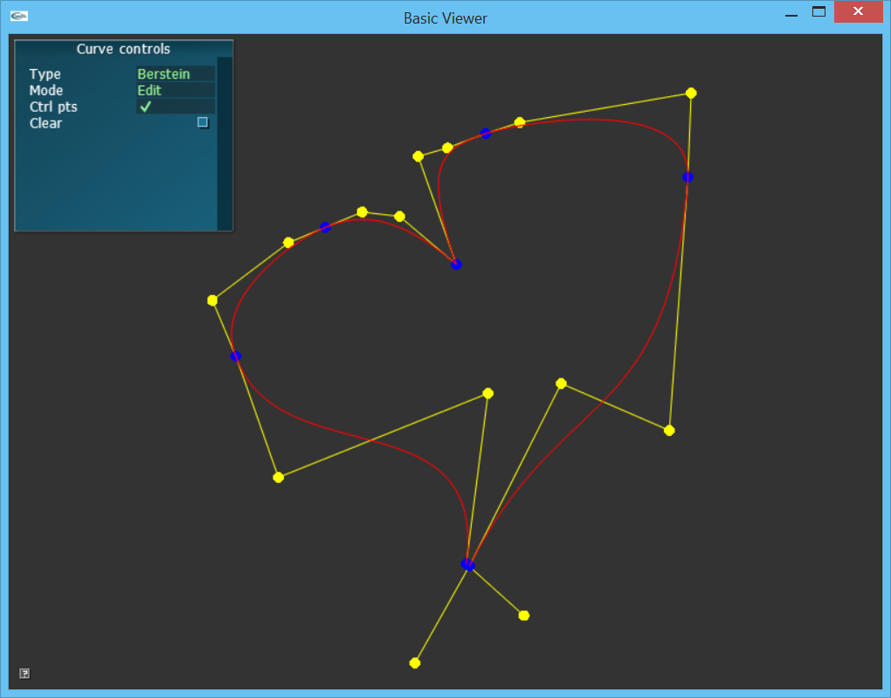

Curve Assignment
In this assignment, you will complete an interactive 2D curve
editor.
User interface overview
The basecode includes a simple orthographics view to test your curve
code. A screenshot is below. With the 'Curve
Controls' panel on the top left, you can create and edit curves. Blue
points represent the input data which are interpolated between. Yellow
points represent control points which are computed based on the input
data. The input data points are also called keys.
- The Type drop-down
menu specifies how curve points are interpolated. You will implement
linear, Bernstein, Castlejau, Hermite, Matrix, and B-Splines.
- The Mode drop-down
menu specifies how left mouse clicks are interpreted:
- Add will append
points to the curve when you left click with mouse;
- Edit will allow
you to drag curve points (blue) and control points (yellow) using the
left mouse button;
- Delete will remove
curve points (blue) when you select one with the left mouse button.
- The Ctrl pts button
will toggle the display of control points (yellow).
- The Clear button
will remove the entire curve.

Curve implementation overview
The curves you implement in this assignment will be the foundation for
animating objects, characters, and crowds for the remainder of the
course. In this assignment, keys are locations in space and the 'time'
associated with each point controls the number of interpolation points
between each input. However, in future assignments, the same curves
will be used to specify changes in state over time. For example, a key
could be the location of a character at a given time or it could be the
color of a particle over time.
This assignment asks you to implement curves which support vectors. (In
your next assignment, you will implement an analagous spline for
interpolating rotations). Animation curves consist of keyframes, where
each keyframe is time/value pair. In this assignment, we will assume
that given data points are uniformly spaced, e.g. the first
key is at time 0, the second key st time 1.0, etc. The framerate of the
curve then determines the number of samples between each key. For
example, if the framerate is 10 fps, the timestep will be 1.0/10 = 0.1,
and the number of samples between each key is 10.
You will need to implement two core features for each interpolation
type. First, you will need to compute control points based on the
curve's keys. Second, you will need to implement the associated
interpolation function. In this implementation, the control points and
full curve are recalculated whenever the data changes with calls to
ASplineVec3::computeControlPoints() and ASplineVec3::cacheCurve().
These functions then call the current algorithm based on the spline
type, which are implemented as subclasses of AInterpolatorVec3.
Below is the class hierarchy of the interpolators you will implement:
AInterpolatorVec3
ALinearInterpolatorVec3
ACubicInterpolatorVec3
ABernsteinInterpolatorVec3
ACasteljauInterpolatorVec3
AMatrixInterpolatorVec3
AHermiteInterpolatorVec3
ABSplineInterpolatorVec3
Given control and data points, the full curve is computed by going
through each subsequent pair of keys and then interpolating between
them (implemented in AInterpolatorVec3::interpolate()). The pseudocode
looks like
clearCurve();
for each segment
key1 = segment.start
key2 = segment.end
time = key1.time
while time < key2.time
u = fraction of duration between key1 and key2
time += timeStep
value = interpolate(data, controlPoints, segment, u)
curve.append(value);
curve.append(lastKey);
Assignment
1. (5 points) Linear splines. To get warmed
up, you will implement a piece-wise linear curve. Given keyframe
points
are pi
= [xi, yi, zi]T
(i = 0 to m) from the user, complete the implementations for
- Compute the interpolation fraction in AInterpolatorVec3::interpolate()
- ALinearInterpolatorVec3::interpolateSegment().
2. (50 points) Cubic
splines. Now, let's implement piece-wise cubic curves. You will
implement three equivalent methods. Given keyframe points of the form pi = [xi, yi]T
(i = 0 to m), construct a cubic spline that interpolates the pi data points.
- (20 points) Compute
control points. Implement
ACubicInterpolatorVec3::computeControlPoints()
- (10 points) Bernstein.
Implement ABernsteinInterpolatorVec3::interpolateSegment()
- (10 points) De
Casteljau.
Implement ACasteljauInterpolatorVec3::interpolateSegment()
- (10 points) Matrix.
Implement AMatrixInterpolatorVec3::interpolateSegment()
3. (20 points) Hermite spline.
Implement
a Hermite spline having C2 continuity which supports
either clamped or natural end point conditions. Implement
AHermiteInterpolatorVec3::computeControlPoints() and
AHermiteInterpolatorVec3::interpolateSegment()
4. (25 points) Cubic B-Spline.
Implement a Bezier curve with natural end point conditions using a
B-Spline formulation. Implement
ABSplineInterpolatorVec3::computeControlPoints() and ABSplineInterpolatorVec3::interpolateSegment().
Feel free to add helper functions to this class to make the
implementation clearer.
Extra credit.
- Implement an additional interpolation type as a subclasses of
AInterpolatorVec3.
For example try a step interpolator, a higher order polynomial, or a
'wiggly' interpolator.
Create a cool drawing with the splines.
Try animating the control points.
Extend the application to show multiple splines. Show splines in different colors.
Build and Submission Instructions!